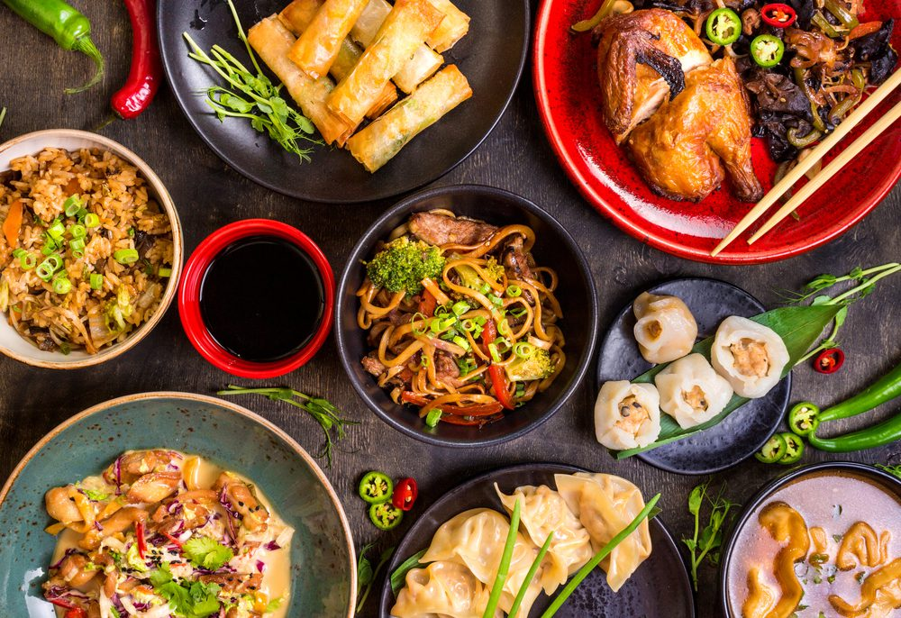

The vast territory and profound history of China endow the country with not only various natural landscape and historical relics, but also abundant food culture. The Chinese food can be divided into Eight Cuisines including both sweet and sour flavors as well as hot and spicy tastes. Following is a list of the top 5 Chinese dishes among people at home and abroad. Get top recipes for the Chinese recipes you crave.
